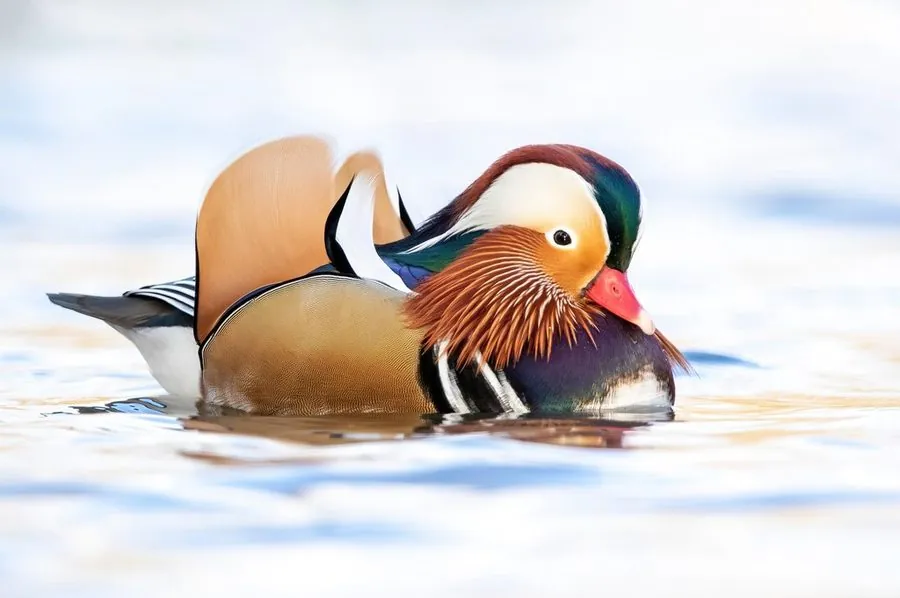

鸟类 · 动物界
鸳鸯 Aix galericulata

雄鸟羽色绚丽、脸侧有白色眉纹与橙色饰羽，雌鸟灰褐色，是中国传统文化中象征爱情的观赏水鸟之一。
- 分类
- 门脊索动物门纲鸟纲目雁形目科鸭科属鸳鸯属
- 栖息环境
- 山地森林中的溪流、湖泊、沼泽与水塘，营巢于靠近水边的树洞中
- 地理分布
- 繁殖于中国东北、华北及俄罗斯远东、日本、朝鲜，越冬于中国南方和日本
- 保护级别
- IUCN 无危（LC）；中国国家二级保护动物
物种志
鸳鸯体长 38–45 cm，翼展 65–75 cm，体重 0.4–0.7 kg。繁殖期雄鸟极为华丽：头顶羽冠呈翠绿色，脸颊白色，眼后有一道白色眉纹，颈侧和胸部为栗红与紫褐色，翅膀上还竖着一对橙黄色的帆状饰羽，被视为最醒目的特征。雌鸟通体灰褐色，眼圈白色，羽色低调。
鸳鸯繁殖于中国东北、华北以及俄罗斯远东、朝鲜和日本，冬季南迁至中国南方和日本越冬，常出现在山地森林中的溪流、湖泊、水塘和水库。它们在水边的大树树洞中营巢，每窝产卵 7–12 枚，孵化 28–30 天；雏鸟出壳第二天就会从高高的洞口跳下，跟随母亲下水觅食。鸳鸯以水生植物、橡实和种子为主食，也吃昆虫、小鱼和螺类。由于观赏价值高、历史上被大量捕捉，目前中国将其列为国家二级保护动物。
形态与习性
- 食性水生植物、橡实和种子，也吃昆虫、小鱼和螺类
- 体长38–45 cm
- 翼展65–75 cm
- 体重0.4–0.7 kg
- 繁殖树洞营巢，每窝 7–12 枚卵，孵化 28–30 天
- 寿命野外约 10 年，圈养可超过 15 年
- 饰羽雄鸟翅上竖起一对橙色帆状饰羽
趣味知识
- 鸳鸯古称“匹鸟”，因雌雄常成对活动，被赋予忠贞爱情的寓意。
- 鸳鸯在树洞中营巢，雏鸟孵出第二天就会从数米高的洞口跳下，随母亲下水。
- 雄性鸳鸯华丽的羽色只在繁殖期出现，换羽后它会变得和雌鸟一样朴素。
- 鸳鸯的英文名意为“中国官鸭”，因为古代常被养在官宦人家的园林里。